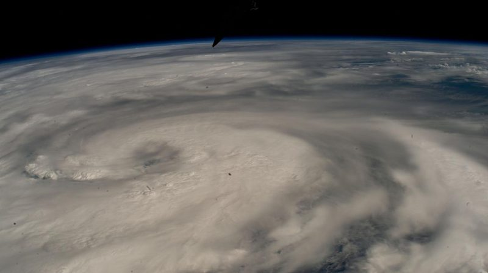

Room 236-C, Computer Engineering Department
hakki.turan[at]bil.omu.edu.tr
API Öğrenmek Neden Değerli?
API dersi öğrencileri için misafir konuşması — Kasım 2026
Dersin materyalleri: github.com/atesnrllh/api-dersi
API öğrenmek, kendi fikrinizi çalışan ve başkalarının kullanabildiği bir sisteme dönüştürme becerisidir.
1. Şimdiye kadar ne öğrendiniz?
Beş haftada bir kitap kataloğu API'si yazdınız. Bu tabloda her konunun gerçek bir üründe hangi sorunu çözdüğü var:
| Derste yaptığınız | Gerçek bir üründe karşılığı |
|---|---|
| FastAPI sunucusu + HTTPX istemcisi, HTTP ve JSON (Hafta 1) | Mobil uygulama, web sitesi ve başka şirketlerin sistemleri aynı veriye aynı yoldan ulaşır. |
POST, istek gövdesi, 201 ve Location (Hafta 2) |
Sipariş, rezervasyon ya da başvuru oluşturmak, yani kullanıcının sisteme bir şey kaydetmesi. |
| REST ile kaynak tasarımı (Hafta 3) | Başka bir geliştirici sizin API'nizi açıklama okumadan da tahmin edebilir: /books/42/reviews. |
CRUD: PUT, PATCH, DELETE (Hafta 4) |
Kullanıcı yanlış girdiği bilgiyi düzeltir, iptal eder, siler. Bu dört iş neredeyse her üründe vardır. |
Alan kuralları, 422 ve hata yanıtları (Hafta 5) |
Bozuk veri sisteme girmez ve müşteri neyi yanlış gönderdiğini anlar. Destek ekibine gelen sorular azalır. |
Dönemin geri kalanında gelecekler de ürünün eksik parçaları:
| Gelecek konu | Çözdüğü sorun |
|---|---|
| PostgreSQL + SQLModel | Sunucu yeniden başladığında sipariş kaybolmaz. |
| pytest | Yeni bir özellik eklerken eskisini bozmadığınızı bilirsiniz. |
| Token ve erişim denetimi | Kimse başkasının kaydını göremez veya değiştiremez. |
| Harici API + Redis önbellek | Başka servisleri kullanırsınız; sık okunan veriyi hızlı ve ucuz sunarsınız. |
| OpenAPI / Swagger dokümantasyonu | Hiç tanışmadığınız bir geliştirici servisinizi kullanabilir. |
Bir arkadaşınız mobil uygulama geliştiriyorsa biri servisi, diğeri ekranı yazar. Aranızdaki anlaşma API'dir.
2. Üç kariyer yolunda karşılığı
| Hedefiniz | API becerisi size ne kazandırır? |
|---|---|
| Freelance / bağımsız çalışma | Müşterinin sipariş, rezervasyon veya raporlama işini çalışan bir sisteme dönüştürmek; mevcut servisleri birbirine bağlamak. |
| Startup / kendi ürününüz | Fikrin temel işleyişini kendiniz kurmak, ilk kullanıcılarla denemek ve hızlıca değiştirmek. |
| Kurumsal kariyer | Ekiplerin ve sistemlerin birbirine bağlandığı işlerde geliştirme, test, hata ayıklama ve dokümantasyon. |
Bu beceri tek başına iş ya da şirket garantisi vermez. Ama bir fikir üzerinde harekete geçmeniz için elinize somut bir araç verir.
3. Gerçek örnekler: API ile para kazanmak
Bannerbear: "Veriyi gönder, reklam görselini al."
Bannerbear, API üzerinden şablonlardan görsel ve video üretiyor. Bir mağaza ürün adını, fotoğrafını ve fiyatını gönderir; kampanya görselleri otomatik hazırlanır.
- Fiyat sayfasındaki başlangıç paketi: aylık 49 $, 1.000 API kredisi.
- Kurucu Jon Yongfook gelişim hikâyesinde ürünü REST API olarak sunmaya geçtiğini ve aylık 10.000 $ tekrarlayan gelire ulaştığını anlatıyor.
Dersle bağlantısı: İsteği almak, alanları doğrulamak, sonucu döndürmek, kullanımı kaydetmek, API'yi belgelemek.
Siz ne yapabilirsiniz? Bir emlak ofisi için ilan görseli ya da bir kurs için kişiye özel sertifika üreten küçük bir servis.
PDFMonkey: "JSON gönder, PDF al."
PDFMonkey, tek bir REST API çağrısıyla rapor, fatura ve sertifika üretiyor. Paketlerinden ikisi (KDV hariç):
- Ayda 300 belge: 5 €
- Ayda 3.000 belge: 15 €
Örnek müşteri: Kursu bitiren 800 kişiye isimlerine özel sertifika hazırlayacak bir eğitim kurumu. İsimleri tek tek yazmak yerine verileri gönderir, belgeleri alır.
Dersle bağlantısı: REST, JSON, belgenin durumunu veritabanında tutmak, anlaşılır hata yanıtları, dokümantasyon.
Freelance: "İki sistemi birbirine bağlamak."
Upwork'teki bir hizmet ilanında bir geliştirici REST API, ödeme, CRM ve e-ticaret entegrasyonlarını 99 $, 199 $ ve 399 $ paketlerle sunuyor. Aynı ilanda API dokümantasyonu ayrıca +40 $.
Örnek müşteri isteği: "Mağazaya sipariş geldiğinde müşteri bilgisi CRM'e aktarılsın, çalışan aynı bilgiyi tekrar yazmasın."
Dokümantasyonun ayrı fiyatlandırılması "Bunu neden yazıyoruz?" sorusunun cevabı.
Freelance: "Postman koleksiyonumuz hazır, entegrasyonu yapacak kişi arıyoruz."
Bir Shopify entegrasyonu iş ilanında müşteri, siparişlerin API ile gönderim sağlayıcısına aktarılmasını ve gönderim durumunun Shopify'a geri gelmesini istiyor. Sağlayıcının endpoint'leri ve dokümantasyonu bir Postman koleksiyonu olarak veriliyor.
Derste açtığınız Postman, müşterinin işi tarif ederken kullandığı araçla aynı.
Önemli ayrım: Şirket geliri net kâr değildir. Fiyat sayfası toplam geliri göstermez. Freelance ilanındaki fiyat, gerçekleşmiş bir satış anlamına gelmez; iş ilanı ise piyasada gerçek bir talep olduğunu gösterir. Fiyatlar Kasım 2026'da kontrol edildi ve değişebilir; Upwork ilanları zamanla kaldırılabilir.
4. Türkiye'den iki açık API
İBB Açık Veri Portalı: Şehrin verisi bir istek uzağınızda
İstanbul Büyükşehir Belediyesi, data.ibb.gov.tr üzerinden 565 veri setini hem indirilebilir dosya hem de API olarak sunuyor. Bunlar arasında ulaşım, otopark, su, çevre ve kültür verileri var. Portal standart bir REST API kullanıyor (CKAN):
GET https://data.ibb.gov.tr/api/3/action/package_search?q=otopark
En dikkat çekici örnek İSPARK web servisi. Anahtar gerektirmiyor ve otoparklardaki boş yer sayısını canlı veriyor:
GET https://api.ibb.gov.tr/ispark/ParkDetay?id=2338
[{ "parkName": "19 Mayıs Açık", "district": "ŞİŞLİ",
"capacity": 65, "emptyCapacity": 19,
"updateDate": "03.11.2026 15:45:01",
"tariff": "0-1 Saat : 140,00;1-2 Saat : 180,00;...", ... }]
Kurum, servisin Türkçe ve İngilizce kullanım dokümanını da yayımlıyor. Bir geliştiricinin bu servisi kullanabilmesi için endpoint'in tek başına yetmediğini, dokümana da ihtiyaç olduğunu gösteriyor.
Dersle bağlantısı: Hafta 1'de yazdığınız HTTPX istemcisi bu adrese de aynı şekilde istek atabilir; yol ve sorgu parametreleri, JSON dizisi ve nesnesi de aynı. 12. haftada harici API kullanımı ve önbellek konusu için de hazır bir örnek: Boş yer sayısı birkaç dakikada bir değişiyor, her kullanıcı isteğinde İBB'ye tekrar sormak gerekir mi?
Siz ne yapabilirsiniz? "Gideceğim ilçede boş yeri olan en yakın otopark" servisi. Bunun için kendi API'niz İBB'den veriyi alır, filtreler ve sonucu kendi biçiminde döndürür.
Hürriyet Developers API: Bir API'nin yaşam döngüsü
Hürriyet 2016'da developers.hurriyet.com.tr adresinde bir geliştirici platformu açtı (Webrazzi haberi). Haberler, köşe yazıları, foto galeriler, kategoriler ve yazarlar REST API ile sunuluyordu. Yalnızca GET destekleniyordu, API anahtarı gerekiyordu, istek sınırları vardı. Platformda dokümantasyon ve deneme sayfası da bulunuyordu.
Şirketin hedefi, geliştiricilerin bu içerikle farklı haber uygulamaları yapmasıydı. Gerçekten de geliştiriciler bu API için Python, JavaScript, Ruby ve Haskell kütüphaneleri yazdı. İyi belgelenmiş bir API, sahibinin yazmadığı kodların ortaya çıkmasını sağlar.
Kasım 2026 itibarıyla ise developers.hurriyet.com.tr adresi artık açılmıyor. Bu kütüphanelerin ve onları kullanan uygulamaların bağlandığı servis yok.
Dersle bağlantısı: İki tarafı da görüyoruz. Sağlayıcı olarak: dokümantasyon ve API anahtarı (Hafta 9–13). Kullanıcı olarak: Başka birinin API'sine bağlıysanız, o servis yanıt vermediğinde uygulamanızın ne yapacağını önceden düşünmeniz gerekir (Hafta 12).
5. İnsanlık, doğa ve uzay için açık API'ler
API'ler yalnızca para kazanmak için yazılmıyor. Bilim kurumları, verilerini herkesin bir istekle ulaşabileceği şekilde açıyor. Aşağıdakilerin hepsini 3 Kasım 2026'da denedim, hepsi JSON döndürüyor. Çoğu anahtar istemiyor; Hafta 1'deki HTTPX istemcinizle hemen deneyebilirsiniz.

Meteoroloji ve afetler
| API | Ne veriyor? | Örnek istek |
|---|---|---|
| Open-Meteo Anahtar yok |
Dünyanın her noktası için anlık hava durumu ve tahmin. Ticari olmayan kullanımda ücretsiz. | GET api.open-meteo.com/v1/forecast?latitude=41.29&longitude=36.33¤t=temperature_2mSamsun'daki anlık sıcaklık |
| USGS Earthquake Anahtar yok |
Dünyadaki depremler: büyüklük, yer, derinlik ve zaman. Veri GeoJSON biçiminde geliyor. | GET earthquake.usgs.gov/fdsnws/event/1/query?format=geojson&minmagnitude=5&limit=10 |
| NASA EONET Anahtar yok |
Devam eden orman yangınları, kasırgalar, volkanlar ve seller. | GET eonet.gsfc.nasa.gov/api/v3/events?status=open |
| OpenAQ Ücretsiz anahtar |
Dünyadaki ölçüm istasyonlarından hava kalitesi (PM2.5, NO₂…). Anahtar X-API-Key başlığında gönderiliyor (Hafta 9'daki konu). |
GET api.openaq.org/v3/locations |
Vahşi yaşam ve biyoçeşitlilik
| API | Ne veriyor? | Örnek istek |
|---|---|---|
| GBIF Anahtar yok |
Küresel Biyoçeşitlilik Bilgi Ağı. Türkiye'den 4,6 milyonun üzerinde canlı gözlem kaydı var: hangi tür, nerede, ne zaman. | GET api.gbif.org/v1/occurrence/search?country=TRGET api.gbif.org/v1/species/match?name=Ursus arctos (boz ayı) |
| iNaturalist Okuma için anahtar yok |
Doğaseverlerin fotoğrafladığı bitki ve hayvanlar. Türkiye'den 724 binin üzerinde gözlem var. Sizin telefonla çektiğiniz bir böcek de bu veriye katılabilir. | GET api.inaturalist.org/v1/observations?place_id=7183 (7183 = Türkiye) |
| Movebank Açık çalışmalar için |
GPS tasmalı hayvanların göç yolları: albatroslar, leylekler, kurtlar… Araştırmacılar veriyi bu API ile paylaşıyor. | GET movebank.org/movebank/service/public/json?entity_type=study&study_id=2911040 (Galapagos albatrosları) |
Uzay
| API | Ne veriyor? | Örnek istek |
|---|---|---|
| NASA APIs Deneme için DEMO_KEY |
Günün astronomi fotoğrafı (APOD), Mars gezgini görüntüleri, Dünya'ya yakın asteroitler. | GET api.nasa.gov/planetary/apod?api_key=DEMO_KEY |
| NASA Image Library Anahtar yok |
NASA'nın fotoğraf ve video arşivinde arama. Bu sayfadaki görseller de oradan geliyor. | GET images-api.nasa.gov/search?q=hurricane&media_type=image |
| Where the ISS at? Anahtar yok |
Uluslararası Uzay İstasyonu'nun anlık konumu, yüksekliği (~415 km) ve hızı (~27.600 km/sa). | GET api.wheretheiss.at/v1/satellites/25544 |
Proje fikri: Bu API'lerin birini kendi API'nizin arkasına koyun. Örneğin GET /trips/{id}/weather kayıtlı doğa yürüyüşünüzün günündeki hava tahminini Open-Meteo'dan alsın. Ya da GET /sightings?species=... Samsun çevresindeki kuş gözlemlerini iNaturalist'ten getirsin. Sonucu önbellekte tutun (Hafta 12) ve dış servis yanıt vermediğinde ne olacağına karar verin.
Her servisin kullanım koşulları ve istek sınırları var; projede kullanmadan önce dokümanını okuyun. Bu da derste dokümantasyonu neden yazdığımızın cevabı.
6. Teknik konuların müşteriye sağladığı değer
| Öğrendiğiniz | Müşteri için anlamı |
|---|---|
| REST API | Hizmeti başka uygulamalar kullanabilir. |
| Doğrulama ve hata yanıtları | Hatalı sipariş sisteme girmez, sorun hemen anlaşılır. |
| Veritabanı | Sipariş, belge ve işlem kaybolmaz. |
| Önbellek | Bekleme süresi ve tekrar işlem maliyeti azalır. |
| Postman / HTTPX / test | Entegrasyon denenebilir, hata bulunabilir. |
| Dokümantasyon | Başka geliştiriciler hizmeti kullanabilir. Ayrıca satılabilir. |
7. Vizeye kadar küçük bir hedef
Dönem projenizde, kendi seçtiğiniz konuda kayıt ekleyen ve listeleyen iki endpoint'i eksiksiz çalıştırın. Postman ya da HTTPX ile deneyin ve bir arkadaşınızın kullanabileceği kadar açıklayın.
Yeni bir ödev başlatmanız gerekmiyor. Mevcut projenizi bu gözle tamamlayın. Amaç "çok gerideyim" yerine "ilk yapacağım şey belli" demek.
Kendimi kontrol ediyorum:
İşaretleriniz yalnızca bu tarayıcıda saklanır.
Bugün her şeyi bilmeniz gerekmiyor. Küçük bir sistemi anlayarak çalıştırmanız yeterli. Gerisini onun üzerine eklersiniz.
Kaynaklar
- Bannerbear: ürün
- Bannerbear: fiyatlandırma
- Bannerbear: aylık 10.000 $ tekrarlayan gelir yolculuğu
- PDFMonkey: paketler ve fiyatlar
- Upwork: API Integration, REST API, Webhooks & Automation hizmeti
- Upwork: Shopify Developer Needed: API Integration ilanı
- İBB Açık Veri Portalı
- İBB: İSPARK otopark detay bilgileri web servisi ve kullanım dokümanı
- Webrazzi: Hürriyet, yazılım geliştiriciler için API yayınladı (2016)
- Open-Meteo, USGS Earthquake, NASA EONET, OpenAQ dokümanları
- GBIF, iNaturalist, Movebank dokümanları
- NASA APIs, NASA Image and Video Library, Where the ISS at?
- Görseller: NASA (kamu malı) — Blue Marble (GSFC_20171208_Archive_e001386), ISS (iss073e0424121), Helene Kasırgası (iss072e001649)
- API dersi materyalleri